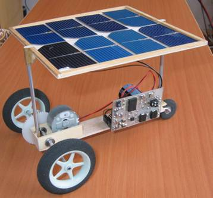
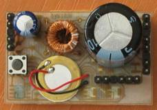
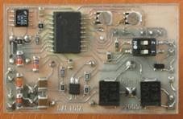

DART – měření
Milan Horkel
Tento dokument popisuje měření provedená na prototypu vozítka DART001A při různých podmínkách.



Testování standardní jízdy
Podmínky testu
Dráha 1.5m s letmým startem. Dráha pro start o délce 39cm. Osvětlení přímo nad vozítkem na startu lampou 500W halogen ve vzdálenosti 102cm na dráhou. Provedeno 10 jízd pro jednotlivé podmínky.
Provedené experimenty
Testoval jsem základní jízdu, jízdu s přídavnou zátěží, jízdu se sníženým umístěním slunečních článků (kratší stojiny) a jízdu se sadou alternativních článků (sada nových nepoškozených čistých článků stejného typu).
| Základní články | Základní články se zátěží 9.7g |
Základní články s krátkými stojinami |
Nové články |
|---|---|---|---|
| 783,7ms | 867,4ms | 818ms | 770,3ms |
Vliv přídavné zátěže
Zvýšení hmotnosti vozítka ze 70g na 79.7g (tedy o 13.95%) vede ke zpomalení jízdy ze 783.7ms na 867.4ms (tedy prodloužení času o 10.7%). Čas se tedy prodlužuje o něco méně než přímo úměrně hmotnosti.
Vliv délky stojin slunečních článků
Stojiny slunečních článků jsou z hliníkové trubičky o průměru 3mm (váha 1g na 100mm). Jejich zkrácením o 49,5mm se jednak sníží hmotnost vozítka (cca o 1g) a současně se vzdálí sluneční články od lampy (z 92cm na 97cm měřeno od skla lampy, zvýšení o 5.4%).Výsledný čas jízdy se zhoršil z původních 783.7 na 818ms (tedy o 4.4%). Odečteme-li vliv snížení hmotnosti o 1g dostaneme odhad 5.5%. Změna vzdálenosti lampy má tedy zhruba přímo úměrný vliv na dobu jízdy.